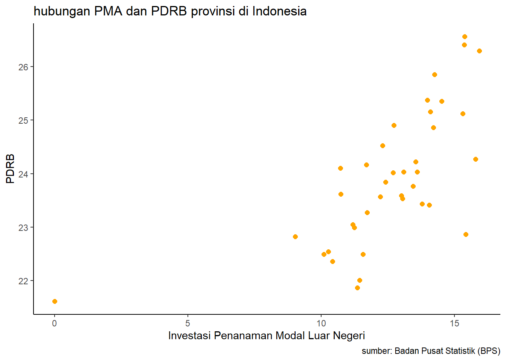

library(tidyverse)
library(readxl)
library(knitr)
library(ggplot2)
library(dplyr)Pengaruh Investasi Penanaman Modal Luar Negeri terhadap PDRB 34 Provinsi di Indonesia Tahun 2023
Metode Penelitian Politeknik APP Jakarta

1 Pendahuluan
1.1 Latar belakang
Investasi Penanaman Modal Asing (PMA) merupakan salah satu pilar penting dalam pembangunan ekonomi suatu negara, termasuk Indonesia. Dalam era globalisasi saat ini, banyak negara berlomba-lomba untuk menarik investasi asing guna mendorong pertumbuhan ekonomi dan meningkatkan kesejahteraan masyarakat. Indonesia, sebagai negara dengan potensi ekonomi yang besar, telah menjadi salah satu tujuan utama bagi investor asing. PDRB (Produk Domestik Regional Bruto) sebagai indikator utama pertumbuhan ekonomi suatu daerah menjadi sangat relevan untuk dianalisis dalam konteks ini.
Pentingnya PMA tidak hanya terletak pada besarnya aliran dana yang masuk ke dalam negeri, tetapi juga pada dampaknya terhadap struktur ekonomi dan lapangan kerja di berbagai provinsi. Dengan adanya investasi asing, diharapkan terjadi transfer teknologi, peningkatan keterampilan sumber daya manusia, dan pengembangan infrastruktur yang pada akhirnya akan berkontribusi pada peningkatan PDRB.
Namun, meskipun potensi keuntungan dari investasi asing sangat besar, terdapat tantangan yang harus dihadapi. Berbagai faktor, seperti stabilitas politik, kebijakan pemerintah, dan kondisi ekonomi global, dapat mempengaruhi keputusan investasi dan dampaknya terhadap PDRB. Oleh karena itu, penelitian ini bertujuan untuk menganalisis pengaruh investasi penanaman modal luar negeri terhadap PDRB provinsi di Indonesia tahun 2023.
Melalui penelitian ini, diharapkan dapat memberikan pemahaman yang lebih mendalam mengenai hubungan antara PMA dan pertumbuhan ekonomi regional di Indonesia. Hasil penelitian ini juga diharapkan dapat menjadi acuan bagi pemb policymakers dalam merumuskan kebijakan yang lebih efektif untuk menarik investasi asing serta memaksimalkan dampak positifnya terhadap PDRB.
1.2 Ruang lingkup
Penelitian ini menggunakan data yang dikumpulkan melalui laporan tahunan Badan Pusat Statistik (BPS). Penelitian ini melibatkan dua variabel utama, yaitu variabel independen (X) berupa investasi penanaman modal asing (PMA) dan variabel dependen (Y) berupa Produk Domestik Regional Bruto (PDRB) di 34 provinsi di Indonesia pada tahun 2023. Analisis dilakukan untuk mengevaluasi hubungan antara kedua variabel tersebut dalam konteks pertumbuhan ekonomi regional.
1.3 Rumusan masalah
- Seberapa besar kontribusi investasi penanaman modal luar negeri terhadap PDRB provinsi?
- Apa saja faktor yang mempengaruhi PDRB provinsi ?
- Apa tantangan yang dihadapi Indonesia dari investasi asing?
1.4 Tujuan dan manfaat penelitian
Tujuan penelitian ini dirumuskan untuk memberikan manfaat bagi pemerintah dan masyarakat, dengan fokus pada pengaruh investasi penanaman modal luar negeri terhadap PDRB provinsi :
1. Bagi Pemerintah
Memberikan rekomendasi kebijakan yang berbasis data untuk meningkatkanivestasi asing yang masuk ke indonesia terhadap PDRB indonesia. Mengidentifikasi strategi yang dapat digunakan pemerintah untuk mengoptimalkan pemanfaatan investasi asing, sehingga dapat mendukung pertumbuhan ekonomi yang berkelanjutan.
2. Bagi Masyarakat
Meningkatkan kesadaran publik mengenai peran investasi asing terhadap PDRB indonesia dan dampaknya terhadap kesejahteraan masyarakat. Mendorong partisipasi masyarakat dalam proses pengambilan keputusan terkait kebijakan investasi asing, dengan memahami implikasi dari kebijakan tersebut terhadap kehidupan sehari-hari mereka.
1.5 Package
Ini tidak wajib ada di packages yang digunakan antara lain sebagai berikut:
2 Studi pustaka
1. Konsep Penanaman Modal Asing (PMA)
Penanaman Modal Asing (PMA) merupakan investasi yang dilakukan oleh investor asing di suatu negara dengan tujuan untuk mendapatkan keuntungan. Menurut UNCTAD (2021), PMA dapat berkontribusi pada pengembangan ekonomi melalui penciptaan lapangan kerja, transfer teknologi, dan peningkatan daya saing industri lokal.
2. Hubungan PMA dan Pertumbuhan Ekonomi
Banyak penelitian menunjukkan bahwa ada hubungan positif antara PMA dan pertumbuhan ekonomi. Misalnya, penelitian oleh Alfaro et al. (2004) menunjukkan bahwa PMA dapat meningkatkan PDRB melalui peningkatan produktivitas dan inovasi. Penelitian ini juga menekankan pentingnya konteks lokal, seperti kualitas institusi dan infrastruktur, dalam memfasilitasi dampak positif PMA.
3. PDRB sebagai Indikator Pertumbuhan Ekonomi
PDRB adalah ukuran nilai total barang dan jasa yang dihasilkan dalam suatu wilayah selama periode tertentu. Menurut Badan Pusat Statistik (2022), PDRB mencerminkan kinerja ekonomi suatu daerah dan dapat dipengaruhi oleh berbagai faktor, termasuk investasi, konsumsi, dan ekspor.
4. Penelitian Terkait di Indonesia
Di Indonesia, beberapa studi telah dilakukan untuk mengeksplorasi hubungan antara PMA dan PDRB. Penelitian oleh Sari dan Susanti (2020) menemukan bahwa PMA memiliki dampak signifikan terhadap PDRB provinsi, terutama di sektor industri dan jasa. Selain itu, penelitian oleh Prasetyo (2021) menunjukkan bahwa kebijakan pemerintah dalam menarik investasi asing sangat berpengaruh terhadap peningkatan PDRB di daerah-daerah tertentu.
5. Faktor-faktor yang Mempengaruhi PMA dan PDRB
Faktor-faktor seperti stabilitas politik, kebijakan perpajakan, dan infrastruktur juga memainkan peran penting dalam menarik PMA. Penelitian oleh Nugroho dan Yulianto (2019) menyatakan bahwa daerah dengan infrastruktur yang baik dan kebijakan yang mendukung lebih mampu menarik investasi asing, yang akan berkontribusi pada peningkatan PDRB.
Studi pustaka ini menunjukkan bahwa PMA memiliki potensi untuk meningkatkan PDRB di Indonesia, namun dampaknya dapat bervariasi tergantung pada konteks dan faktor lokal. Penelitian lebih lanjut diperlukan untuk menganalisis lebih dalam hubungan ini, terutama pada tahun 2023, di mana kondisi ekonomi global dan domestik mengalami perubahan yang signifikan.
3 Metode penelitian
3.1 Data
Penelitian ini menggunakan data yang diambil dari Badan Pusat Statistik (BPS), dengan variabel X merupakan investasi penanaman modal asing, dan variabel Y merupakan PDRB provinsi di Indonesia tahun 2023. Kemudian data diolah agar linier sehingga menghasilkan data sebagai berikut:
library(knitr)
library(kableExtra)
data<-read_excel("C:/invest/data.xlsx")
kable(data, format = "html", caption = "Tabel 1: Data linier") %>%
kable_styling(full_width = FALSE, position = "center") %>%
row_spec(0, bold = TRUE, background = "#D3D3D3") %>%
add_header_above(c(" " = 1, "Data PMA dan PDRB" = ncol(data) - 1)) %>%
column_spec(1, bold = TRUE, border_right = TRUE)| Provinsi | X | Y |
|---|---|---|
| Aceh | 12.423600 | 23.84612 |
| Sumatera Utara | 13.982126 | 25.37817 |
| Sumatera Barat | 11.701063 | 24.16615 |
| Riau | 14.529587 | 25.35456 |
| Jambi | 10.716637 | 24.10334 |
| Sumatera Selatan | 14.206606 | 24.86497 |
| Bengkulu | 11.239804 | 22.99076 |
| Lampung | 12.304106 | 24.52744 |
| Kepulauan Bangka Belitung | 11.191342 | 23.05187 |
| Kepulauan Riau | 13.546454 | 24.22548 |
| DKI Jakarta | 15.390357 | 26.56477 |
| Jawa Barat | 15.929800 | 26.29360 |
| Jawa Tengah | 14.262565 | 25.85718 |
| DI Yogyakarta | 10.736397 | 23.61746 |
| Jawa Timur | 15.371759 | 26.41144 |
| Banten | 15.308774 | 25.12279 |
| Bali | 13.602936 | 24.03511 |
| Nusa Tenggara Barat | 13.057078 | 23.53504 |
| Nusa Tenggara Timur | 11.730453 | 23.27679 |
| Kalimantan Barat | 13.103181 | 24.03552 |
| Kalimantan Tengah | 13.455401 | 23.76228 |
| Kalimantan Selatan | 12.700464 | 24.01649 |
| Kalimantan Timur | 14.102718 | 25.15833 |
| Kalimantan Utara | 14.056180 | 23.41301 |
| Sulawesi Utara | 12.224404 | 23.56800 |
| Sulawesi Tengah | 15.795698 | 24.27041 |
| Sulawesi Selatan | 12.726948 | 24.90161 |
| Sulawesi Tenggara | 13.013218 | 23.59219 |
| Gorontalo | 10.428216 | 22.35982 |
| Sulawesi Barat | 10.098232 | 22.49059 |
| Maluku | 11.574021 | 22.48953 |
| Maluku Utara | 15.424588 | 22.86504 |
| Papua Barat | 10.268131 | 22.54088 |
| Papua Barat Daya | 11.440355 | 22.00710 |
| Papua | 9.024011 | 22.82420 |
| Papua Selatan | 11.365585 | 21.86620 |
| Papua Tengah | 13.782987 | 23.43379 |
| Papua Pegunungan | 0.000000 | 21.61666 |
library(readxl)
data<-read_excel("C:/invest/data.xlsx")
head(data)# A tibble: 6 × 3
Provinsi X Y
<chr> <dbl> <dbl>
1 Aceh 12.4 23.8
2 Sumatera Utara 14.0 25.4
3 Sumatera Barat 11.7 24.2
4 Riau 14.5 25.4
5 Jambi 10.7 24.1
6 Sumatera Selatan 14.2 24.9library("ggplot2")
library("readxl")
library("dplyr")
ggplot(data=data,aes(x=X,y=Y))+
geom_point(color="orange",size=2)+
labs(title="hubungan PMA dan PDRB provinsi di Indonesia",
x="Investasi Penanaman Modal Luar Negeri",
y="PDRB",
caption = "sumber: Badan Pusat Statistik (BPS)")+
theme_classic()
3.2 Metode analisis
Metode yang dipilih adalah regresi univariat atau Ordinary Least Square (OLS) dengan 1 variabel independen. Penelitian ini bermaksud mencari hubungan antara PMA dan PDRB. Spesifikasi yang dilakukan adalah:
\[ y_{t}=\beta_0 + \beta_1 x_t+\mu_t \] di mana \(y_t\) adalah PDRB dan \(x_t\) adalah PMA.
4 Pembahasan
4.1 Pembahasan masalah
Dari regresi yang telah dilakukan menghasilkan data sebagai berikut:
| variable | Coefficients |
|---|---|
| Intercept | 20.00573 |
| X | 0.31150 |
| p-value | 3.706e-06 |
| Multiple R-squared | 0.4526 |
| Adjusted R-squared | 0.4374 |
Maka didapatkan : \[ y_{t}=\ 20.00573 + \ 0.31150 x_t+\mu_t \] Intercept yang signifikan menunjukkan bahwa jika nilai investasi PMLN (X) sama dengan nol, nilai PDRB (Y) di provinsi Indonesia akan berada pada angka sekitar 20.00573. Hal ini memberi gambaran bahwa faktor lain (selain PMLN) turut berperan dalam menjelaskan PDRB, dan intercept ini mencerminkan pengaruh variabel lain tersebut, meskipun p-value yang sangat kecil menunjukkan bahwa nilai intercept ini signifikan secara statistik.
Koefisien untuk PMLN (X) sebesar 0.31150 menunjukkan bahwa setiap peningkatan satu unit dalam investasi penanaman modal luar negeri diharapkan dapat meningkatkan PDRB sebesar 0.31150 unit, dengan asumsi faktor lain tetap konstan. PMLN memiliki hubungan positif yang signifikan dengan PDRB. P-value yang sangat kecil (3.71e-06) menunjukkan bahwa hubungan ini sangat signifikan secara statistik, yang berarti bahwa investasi PMLN berpengaruh signifikan terhadap PDRB di provinsi Indonesia pada tahun 2023.
4.2 Analisis masalah
Hasil regresinya adalah
setwd("C:/invest")
data <- read_excel("data.xlsx")
library(readxl)
reg2<-lm(data=data,Y~X)
summary(reg2)
Call:
lm(formula = Y ~ X, data = data)
Residuals:
Min 1Q Median 3Q Max
-1.94546 -0.62626 -0.04072 0.74177 1.76494
Coefficients:
Estimate Std. Error t value Pr(>|t|)
(Intercept) 20.00573 0.73127 27.358 < 2e-16 ***
X 0.31150 0.05709 5.456 3.71e-06 ***
---
Signif. codes: 0 '***' 0.001 '**' 0.01 '*' 0.05 '.' 0.1 ' ' 1
Residual standard error: 0.9493 on 36 degrees of freedom
Multiple R-squared: 0.4526, Adjusted R-squared: 0.4374
F-statistic: 29.77 on 1 and 36 DF, p-value: 3.706e-06R-squared sebesar 0.4526 menunjukkan bahwa model regresi ini dapat menjelaskan sekitar 45.26% variasi dalam PDRB yang dipengaruhi oleh investasi penanaman modal luar negeri (PMLN). Meskipun hubungan antara PMLN dan PDRB signifikan, model ini belum dapat menjelaskan seluruh variasi dalam PDRB, yang mengindikasikan kemungkinan adanya faktor lain selain PMLN yang turut berperan dalam variasi tersebut. Sementara itu, Adjusted R-squared yang sedikit lebih rendah, yaitu 0.4374, menunjukkan bahwa setelah memperhitungkan jumlah prediktor dalam model (dalam hal ini hanya satu variabel independen), sekitar 43.74% variasi dalam PDRB masih dapat dijelaskan oleh model. Selain itu, nilai F-statistic sebesar 29.77 dengan p-value 3.706e-06 mengindikasikan bahwa model regresi ini secara keseluruhan sangat signifikan dalam menjelaskan variasi PDRB. P-value yang sangat kecil ini menegaskan bahwa model ini dapat digunakan dengan tingkat keyakinan yang tinggi untuk memprediksi PDRB, menunjukkan bahwa PMLN memiliki peran yang signifikan dalam mempengaruhi pertumbuhan ekonomi daerah di Indonesia.
5 Kesimpulan
Penanaman Modal Asing (PMA) dapat berpengaruh signifikan terhadap Produk Domestik Regional Bruto (PDRB) di suatu daerah. Investasi asing sering kali membawa aliran modal yang besar, yang digunakan untuk membangun infrastruktur, meningkatkan kapasitas produksi, dan menciptakan lapangan kerja baru, yang semuanya dapat mendorong pertumbuhan ekonomi dan meningkatkan PDRB. Selain itu, PMA juga memungkinkan transfer teknologi dan keterampilan yang dapat meningkatkan produktivitas serta efisiensi di sektor-sektor terkait. Investasi asing sering berfokus pada sektor-sektor ekspor, yang dapat meningkatkan pendapatan dari perdagangan internasional dan memberi kontribusi langsung pada PDRB. Meskipun demikian, dampak PMA terhadap PDRB tidak selalu merata dan bergantung pada kualitas investasi, kebijakan pemerintah, serta kondisi ekonomi dan sosial setempat. Oleh karena itu, meskipun PMA memiliki potensi besar untuk mendorong pertumbuhan ekonomi, keberhasilannya sangat dipengaruhi oleh berbagai faktor yang mendukung atau menghambatnya.
Berdasarkan hasil analisis regresi linier sederhana yang dilakukan untuk menguji pengaruh investasi penanaman modal luar negeri terhadap PDRB 34 provinsi Indonesia pada tahun 2023, dapat disimpulkan bahwa terdapat hubungan yang signifikan antara kedua variabel tersebut. Koefisien regresi untuk PMA sebesar 0.31150 menunjukkan bahwa setiap peningkatan satu unit pada PMA dapat meningkatkan PDRB sebesar 0.31150 unit, dengan tingkat signifikansi yang sangat tinggi (p-value < 0.01).
Model regresi ini menunjukkan bahwa PMA memiliki pengaruh yang signifikan terhadap pertumbuhan ekonomi di tingkat provinsi. Hal ini tercermin dari nilai F-statistik yang sangat signifikan (p-value = 3.706e-06) dan R-squared sebesar 0.4526, yang berarti sekitar 45.26% variasi dalam PDRB dapat dijelaskan oleh variabel PMA.
Namun, meskipun hasil ini menunjukkan adanya pengaruh yang kuat, nilai R-squared yang moderat juga mengindikasikan bahwa faktor-faktor lain yang tidak dimasukkan dalam model ini mungkin turut memengaruhi PDRB. Oleh karena itu, perlu dilakukan penelitian lebih lanjut dengan mempertimbangkan variabel lain yang mungkin berperan dalam dinamika perekonomian.
Secara keseluruhan, penelitian ini memberikan bukti empiris bahwa investasi penanaman modal luar negeri memiliki dampak positif yang signifikan terhadap pertumbuhan ekonomi di Indonesia. Kebijakan yang mendukung peningkatan investasi asing diharapkan dapat berkontribusi pada pengembangan ekonomi yang lebih merata di seluruh provinsi di Indonesia.
6 Referensi
UNCTAD. (2021). World Investment Report 2021. United Nations Conference on Trade and Development.
Alfaro, L., Chanda, A., Kalemli-Ozcan, S., & Sayek, S. (2004). “FDI and Economic Growth: The Role of Local Financial Markets.” Journal of International Economics, 64(1), 89-112.
Badan Pusat Statistik. (2022). Statistik Ekonomi Provinsi. Jakarta: BPS.
Sari, D. P., & Susanti, R. (2020). “Pengaruh Penanaman Modal Asing Terhadap PDRB di Provinsi Jawa Barat.” Jurnal Ekonomi dan Pembangunan, 18(2), 123-135.
Prasetyo, R. (2021). “Dampak Kebijakan Investasi Terhadap PDRB di Indonesia.” Jurnal Ekonomi dan Kebijakan Publik, 10(1), 45-60.
Nugroho, A., & Yulianto, E. (2019). “Faktor-Faktor yang Mempengaruhi Investasi Penanaman Modal Asing di Indonesia.” Jurnal Bisnis dan Manajemen, 8(3), 210-225.